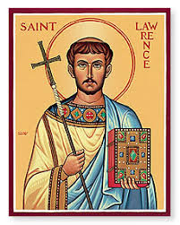
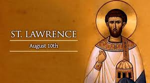
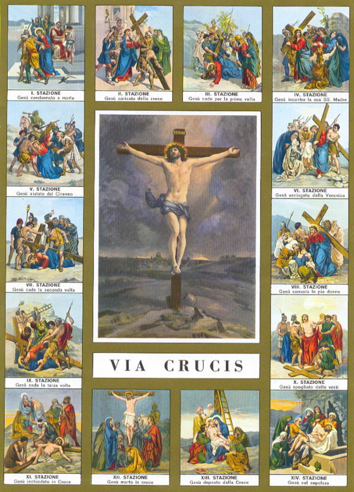

ST. Lawrence Study Guide
Topics:
- 1. Who is ST. LAWRENCE?
- 2. The 14 Stations of the Cross
- 3. The Rules and Aims of the Server's Guild
- 4. Sacraments of the Church
Who is ST LAWRENCE?
Lawrence (Latin laurentius, literally “laurelled”) is the name of the archdeacon of the church of Rome who was martyred (a person who is killed because of their religious or other beliefs) in Rome in the year 258 during the persecution of Christians ordered by the Emperor Valerian. In the century after his martyrdom, devotion to this St. Lawrence developed rapidly and far beyond Rome. The saint was tied on top of an iron grill over a slow fire that roasted him. God gave him so much strength and joy that Lawrence joked with the judge saying "Turn me over". Before he died, he prayed that the city of Rome might be converted to Jesus. He prayed that the Catholic faith would spread all over the world.
The 14 Stations of the Cross
The traditional 14 Stations of the Cross are:
- Jesus is condemned to death
- Jesus accepts the cross
- Jesus falls the first time
- Jesus meets His Mother
- Simon of Cyrene carries the cross
- Veronica wipes the face of Jesus
- Jesus falls the second time
- Jesus meets the women of Jerusalem
- Jesus falls the third time
- Jesus is stripped of His garments
- Crucifixion: Jesus is nailed to the cross
- Jesus dies on the cross
- Jesus' body is removed from the cross
- Jesus is laid in the tomb
The Rules and Aims of the Server's Guild

Rules:
- To Respect
- To comfort the needy, sick and the suffering
- To be present and punctual at all the sacraments of the church
Aims:
- To comfort the needy, sick and the suffering
Sacraments of the Church

The 7 Sacraments are Baptism, Confirmation, Eucharist, Penance and Reconciliation, Anointing of the Sick, Holy Orders, and Matrimony. They are divided into three categories: Sacrament of Initiation, Sacraments of Healing, and Sacraments at the Service of Communion.